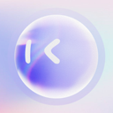
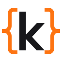
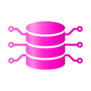

Browser/computer use AI agent tools
69 browser/computer use tools in the AgentScout directory, each with a link-checked listing.
Updated
There are 69 browser/computer use tools: 48 open source, 1 source-available, 7 free or freemium, 3 paid, usage-based or enterprise, 10 pricing on the maker's site.
Quick comparison Top 10 of 69 listed below. Pricing as the maker states it; blank means we don't have it.
| Tool | Pricing | Best for | Open source |
|---|---|---|---|
| Webcmd | Open source | Automate the browser | Yes |
| Scout (Outcrawl) | Open source + cloud | Automate the browser | Yes |
| OpenAdapt | Open source | Write code | Yes |
| Usage-based | Automate the browser | ||
| Moli | Open source | Automate the browser | Yes |
| Open source | Automate the browser | Yes | |
| Open source | Automate the browser | Yes | |
| RobotGo | Open source | Automate the browser | Yes |
| Mobile MCP | Open source | Automate the browser | Yes |
| Open source | Automate the browser | Yes |
Tasks in this category
Webcmd
Browser layer for AI agents that learns how each website works as agents use it and saves that as local memory to make later runs faster and cheaper.
Added
Scout (Outcrawl)
Open-source browser agent from Outcrawl that opens a real browser and clicks, types and reads pages to finish a task you describe.
Added
OpenAdapt
Execution layer for computer-use agents that turns a demonstrated task into a local program that repeats the clicks without model calls and stops on mismatches.
Added
Hyperbrowser
Cloud browsers and isolated sandboxes for AI agents that you start in one call and drive with Playwright, Puppeteer or any agent.
Added
Moli
Lightweight Rust headless browser for AI agents that fetches pages, searches and extracts content, usable via CLI, CDP or WebDriver.
Added
Browser Use Web UI
Gradio web interface for the Browser Use agent that runs AI browser automation tasks with many LLM providers and your own browser.
Added
Midscene.js
Vision-driven UI automation and E2E testing framework where a GUI agent carries out natural-language steps on web, mobile and desktop apps.
Added
RobotGo
Go library for cross-platform desktop automation and AI computer use that controls mouse, keyboard, screen, windows and processes.
Added
Mobile MCP
MCP server that lets agents automate iOS and Android apps on simulators, emulators and real devices through one platform-agnostic interface.
Added
Windows-MCP
Lightweight MCP server for computer use on Windows that lets agents navigate files, control apps and interact with the UI.
Added
Peekaboo
macOS CLI, menu-bar app and MCP server for screen capture, accessibility inspection and native UI automation by AI agents.
Added
AstronRPA
iFlytek's open-source enterprise RPA desktop app with a low-code visual designer whose workflows can be called by AI agents.
Added
Playwriter
Chrome extension and CLI or MCP that lets agents control your own logged-in browser by running Playwright snippets.
Added

mobile-use
Open-source AI agent that controls real Android and iOS apps from natural-language commands.
Added
Qwen-UI-Agent
Tongyi foundation GUI agent model that operates mobile, computer and browser interfaces, trained and evaluated on real devices.
Added
webclaw
Rust web extraction tool that turns sites into clean Markdown or JSON for agents, as a CLI, MCP server and REST API, with a hosted API.
Added
Ui.Vision RPA
Browser and desktop automation extension with OCR and image recognition, plus an MCP server so AI agents can create and run macros.
Added
Lightpanda
Headless browser written from scratch in Zig for AI agents and automation, built for speed and low memory rather than forked from Chromium.
Added
ScrapeGraphAI
Python library that uses LLMs and graph logic to build scraping pipelines: describe the data you want and it extracts it from websites or documents.
Added
UFO
Microsoft's desktop agent framework that operates Windows apps and orchestrates multi-device tasks as task graphs.
Added
Notte
Browser infrastructure for AI agents: stealth cloud browsers with CAPTCHA solving and proxies, a Playwright-based framework and serverless automations.
Added
Agent-E
Emergence AI's web agent that automates tasks in the browser through hierarchical planning.
Added
Firefox DevTools MCP
Mozilla's MCP server that lets AI agents browse with Firefox and inspect pages with its developer tools over WebDriver BiDi.
Added
Apify
Marketplace of thousands of ready-to-run scrapers and automation tools ("Actors") for real-time web data, usable from apps and AI agents, including via MCP.
Added
HARPA AI
Chrome extension browser agent that combines models like GPT, Claude and Gemini to automate web tasks, searching, writing and summarizing.
Added
BrowserAct
No-code builder for reusable AI web scrapers that collect structured data and connect it to apps, workflows and agents.
Added

Kadoa
AI agents that build, monitor and maintain web data pipelines producing verified datasets for investors.
Added
AGI-0 by AGI, Inc.
AGI, Inc.'s small action model and Android agent that sees the screen and acts across any app without APIs.
Added
Browserable
Open-source JavaScript browser automation library for AI agents.
Added
Airtop
Turns plain-English workflow descriptions into deterministic agents that work across your apps, APIs and the web.
Added
Scrapling
Python web-scraping framework with fast HTTP requests, stealth browsers, adaptive parsing and concurrent crawling, plus an MCP server for agents.
Added
CloakBrowser
Chromium build with source-level fingerprint patches, used as a drop-in Playwright or Puppeteer replacement for agent browsing.
Added
Sigma AI Browser
Free private web browser with a built-in AI agent, local AI and ad blocker.
Added
Terminator
Desktop automation library and MCP server that lets AI assistants control any Windows app through the accessibility tree, like Playwright for the desktop.
Added
Fellou
Agentic browser that carries out multi-step tasks across websites, runs deep searches and turns results into reports.
Added
Browser Harness
Agent skill from the Browser Use team that lets Claude Code, Codex or Cursor drive your own logged-in Chrome to click, type, read pages and download files.
Added
ego lite
Free macOS browser where Claude Code or Codex run automation tasks in their own isolated Spaces next to your tabs, reusing your logged-in sessions through an agent skill.
Added
Holo4 (H Company)
Open-weight computer-use models (27B and 35B-A3B) released Oct 1.
Added
OpenSwarm
AI-first 'operating system' where swarms of agents run apps and browsers in parallel.
Added
Browser Use
Library that lets AI agents control a web browser.
Added
Browserbase
Hosted headless browsers built for agents.
Added
Stagehand
Browser automation framework mixing code with natural-language actions.
Added
Playwright MCP
Microsoft's MCP server giving agents browser control via Playwright.
Added
Skyvern
Automates browser workflows with vision + LLMs.
Added
Anchor Action Index
Shared memory of web workflows for Anchor's cloud browsers: computer-use agents replay proven paths as deterministic code and the model only steps in where a page has changed, exposed as tools on Anchor's MCP server and REST API.
Added
Comet
Perplexity's AI browser with a built-in assistant that can browse, summarize and complete tasks on web pages for you.
Added
Minion AI
Browser agent that completes web tasks for you.
Added
TinyFish
Enterprise web agents that run at scale across websites to gather data and take actions.
Added
Crawl4AI
Open-source crawler that turns websites into clean, LLM-ready Markdown for agents and RAG pipelines.
Added
Chrome DevTools MCP
Official MCP server that lets coding agents control and inspect a live Chrome browser through DevTools for debugging and performance work.
Added
UI-TARS-desktop
ByteDance's open-source multimodal agent stack, including a desktop app and Agent TARS for controlling computers and browsers.
Added
OpenCLI
Turns websites into CLI commands and lets agents use your logged-in browser.
Added
Cua
Open-source infrastructure for computer-use agents: sandboxes, drivers across operating systems and benchmarks.
Added
Page Agent
JavaScript in-page agent that controls web interfaces from natural language instructions.
Added

Maxun
Turns websites into structured APIs with no-code robots for extraction and monitoring.
Added
Nanobrowser
Open-source Chrome extension agent that automates web tasks in your own browser.
Added
BrowserOS
Open-source agentic browser that runs AI agents locally.
Added
Agent-S
Open agentic framework that uses computers like a human through the GUI.
Added
Google ARTEMIS
Google's tool that turns natural-language instructions into Android automation.
Added
Magentic-UI
Microsoft Research's experimental human-in-the-loop agent that works across the browser and local files.
Added
Mobilerun
LLM-agnostic agent framework for controlling Android and iOS devices with natural language.
Added
Steel
Open-source browser API and sandbox for AI agents to control web browsers at scale.
Added
Agent Device
Mobile app automation and verification for coding agents on iOS and Android.
Added
Playwright Skill
Playwright automation skill for coding agents.
Added
TuriX CUA
Computer-use agent that operates desktop apps.
Added
Spider
Fast Rust web crawler for collecting data for agents and LLMs.
Added
Unbrowse
Turns websites into APIs agents can call.
Added
Arro
Arro, a desktop assistant that guides you through tasks on your computer and repeats them for you.
Added
Scalebrowser
Gives each agent its own isolated browser with a persistent identity for staying signed in.
Added
Top browser/computer use repos on GitHub (51)
| Repo | GitHub stars | Licence | Last push |
|---|---|---|---|
| Browser Use ↗ | 117,912 | MIT | 2026-10-17 |
| Scrapling ↗ | 88,372 | BSD 3-Clause | 2026-10-18 |
| Crawl4AI ↗ | 85,667 | Apache License 2.0 | 2026-10-15 |
| 53,681 | Apache License 2.0 | 2026-10-19 | |
| 39,297 | Apache License 2.0 | 2026-10-09 | |
| 38,115 | Apache License 2.0 | 2026-10-08 | |
| Lightpanda ↗ | 36,657 | GNU Affero General Public License v3.0 | 2026-10-19 |
| CloakBrowser ↗ | 32,280 | MIT | 2026-10-14 |
| ScrapeGraphAI ↗ | 31,882 | MIT | 2026-10-06 |
| OpenCLI ↗ | 30,335 | Apache License 2.0 | 2026-10-17 |
| Cua ↗ | 29,966 | MIT | 2026-10-19 |
| Page Agent ↗ | 29,459 | MIT | 2026-09-06 |
| Stagehand ↗ | 25,660 | MIT | 2026-10-18 |
| Moli ↗ | 19,349 | — | 2026-10-19 |
| Browser Harness ↗ | 18,465 | MIT | 2026-10-17 |
Top 15 of 51 by stars. Stars and licence come from each repo, checked when the listing was last verified.
All categories
Related searches
Who uses these
Best-of lists
Alternatives pages
Task guides
Facts come from our directory listings; pricing is as each maker states it. Check official sites before you choose.